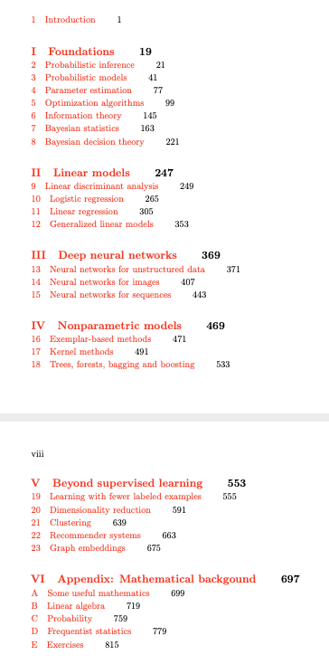

Probabilistic Machine Learning: An Introduction
by Kevin Patrick Murphy.
MIT Press, 2021.
Table of contents>/

Key links
Endorsements
- "My favorite machine learning book just received a face-lift!
'Probabilistic Machine Learning: An Introduction' is the most
comprehensive and accessible book on modern machine learning by a
large margin.
It now also covers the latest developments in deep learning and
causal discovery. With this upgrade it will remain the reference
book for our field that every respected researcher needs to have
on their desk."
-- Max Welling,
U. Amsterdam
- "There are many books on machine learning out there, but none gives
such a well-rounded, up-to-date, and comprehensive view of the
field as this one. We use this book as reference reading for our
students taking the advanced machine learning course at Oxford to
introduce them to fundamental as well as current topics in the
field. I'm amazed at the amount of work that went into this
book---which will surely be used by many to train the next
generation of machine learning experts."
-- Yarin Gal, U. Oxford
- "The book looks very
impressive". -- Lihong Li, Amazon